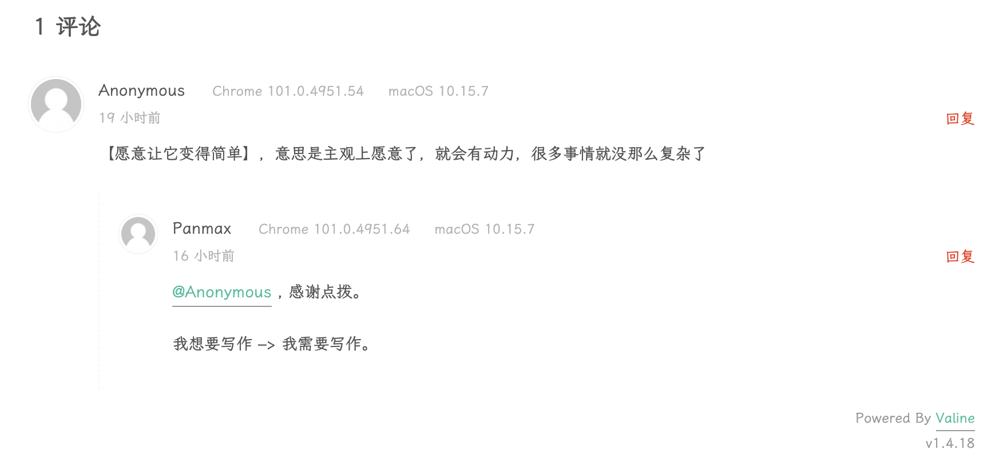
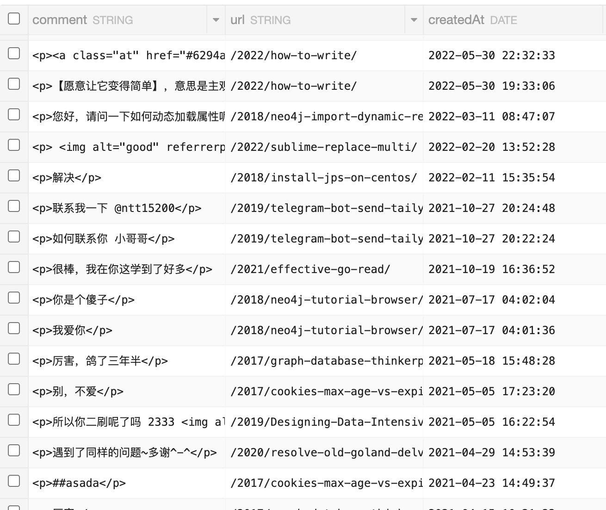
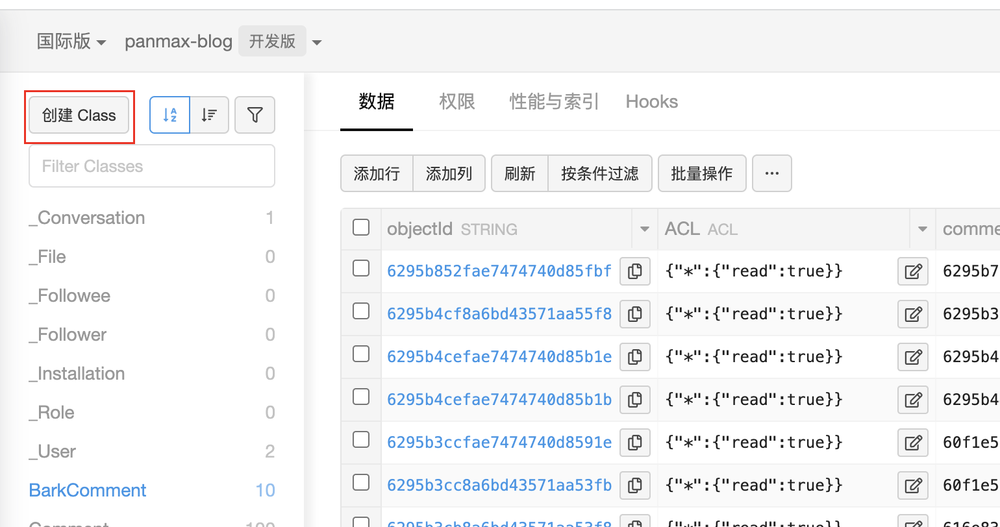
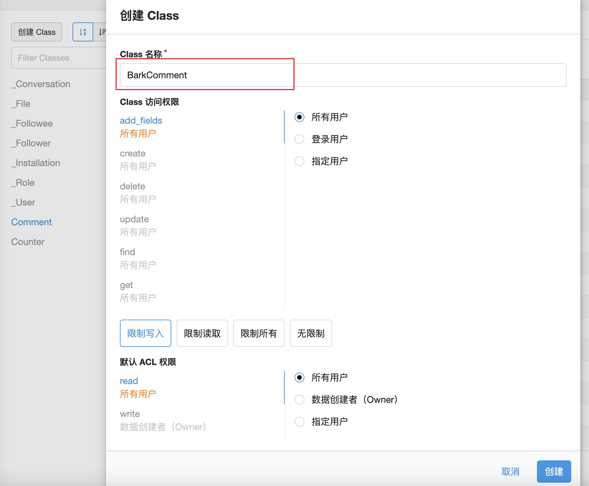
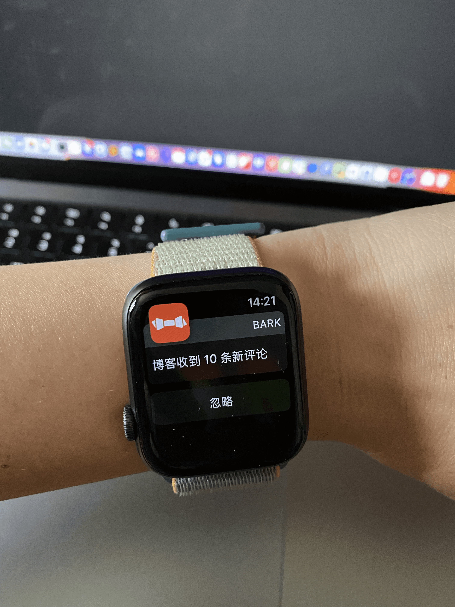
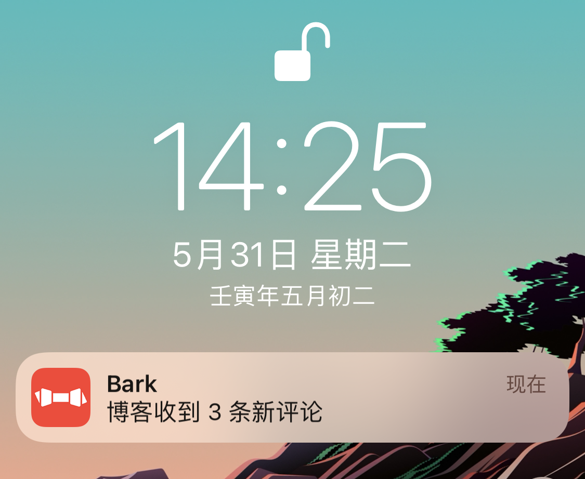

正向反馈
昨天写了篇博客 《 如何写作》 ，在这篇文章中我翻译了别人的一篇短文，同时加了点自己的叙述。
晚上用手机浏览这篇博客的时候发现收到一个新留言，赶紧打开电脑进行了回复。

让我兴奋的是，没想到有人会看我的博客，而且还能指正我理解不到位的地方。在被人关注并且能收获积极反馈的情况下会给我们正向激励，让我们更愿意做一些输出。
我博客的评论系统后端是用 Leancloud 做的存储，默认不支持通知，所以之前我并没有太关注过评论，甚至不知道哪些文章有评论，如果需要的话就到 Leancloud 后台去看看。

为了以后能更及时的接收与回复评论，我准备给博客评论加个监控，当有新评论时通过 Bark 提醒我，有朋友之前实现过这个功能，但我忘记怎么做的了，索性这次重新再造一个。
这次继续使用 AWS 的 Lambda 运行我们的服务，关于 Lambda 的使用姿势可以看下我前几天的一篇文章：《利用 AWS Lambda 定期清理 S3 文件》 )，这里直接介绍实现细节。
流程说明
流程图如下：

说明下如何判断有没有新评论：这里我们继续借助 Leancloud 的存储，为了不影响 Comment 表，我们新建一个 BarkComment 表来存储已经发过通知的评论，只需在 Class 名称处填入 BarkComment 即可，其他保持默认：


我们在通过 SDK 写入数据时会自动帮我们将需要的列创建出来，所以也不用做列的新增。
handler
再来看下核心代码：
1 | import os |
看过之前文章的已经知道，我们需要将 leancloud 的 SDK 在项目目录下也下载一份：
pip install leancloud==2.9.10 --target=.
serverless.yml
provider.environment 新增本次需要的环境变量：
1 | provider: |
functions 空间内添加：
1 | functions: |
表示每 5 分钟执行一次，同时提供给我们一个 HTTP 终端来进行调试。
我们将这个服务进行发布，手动访问下分配给我们的 endpoint，通过下图可以看到我已经收到了通知：

因为之前 BarkComment 表中没有数据，所以系统认为这 10 条都是新评论。
然后我自己在博客里留了 3 条评论，等待每个 5 分自动执行的时候再看下效果：

在 14 点 25 分时，我们收到了「博客收到3条新评论」的通知，说明我们的程序成功判断出了新的增量数据，同时可以检查下 BarkComment 表也确实有了新数据。
其实我们可以做的更完善一些，比如通知我们具体是哪篇文章有新评论，评论的内容是什么等等。大家需要的话可以自己实现，我只在这里进行抛砖。